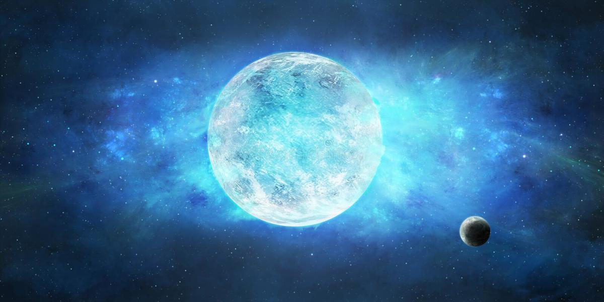

Estrella supergigantes
Las estrellas supergigantes son estrellas extremadamente grandes y luminosas,
mucho más que el Sol. Representan una de las últimas etapas en la vida de las
estrellas muy masivas.
Se distinguen por su tamaño enorme y su brillo intenso, ya que consumen
su combustible a gran velocidad.

Características principales
- Tamaño → pueden ser cientos o incluso miles de veces más grandes que el Sol en radio.
- Luminosidad → brillan millones de veces más que el Sol.
- Vida corta → debido a que consumen rápidamente su combustible, viven solo unos pocos millones de años (muy poco comparado con los miles de millones de años del Sol).
- Evolución → al agotar su energía, suelen terminar en explosiones de supernova, dando origen a estrellas de neutrones o agujeros negros.
Tipos de supergigantes
- Supergigantes rojas
- Son estrellas frías pero muy grandes.
- Ejemplo: Betelgeuse (en la constelación de Orión).
- Supergigantes azules
- Más calientes que las rojas, con temperaturas muy elevadas.
- Ejemplo: Rigel (también en Orión).
Volver al inicio